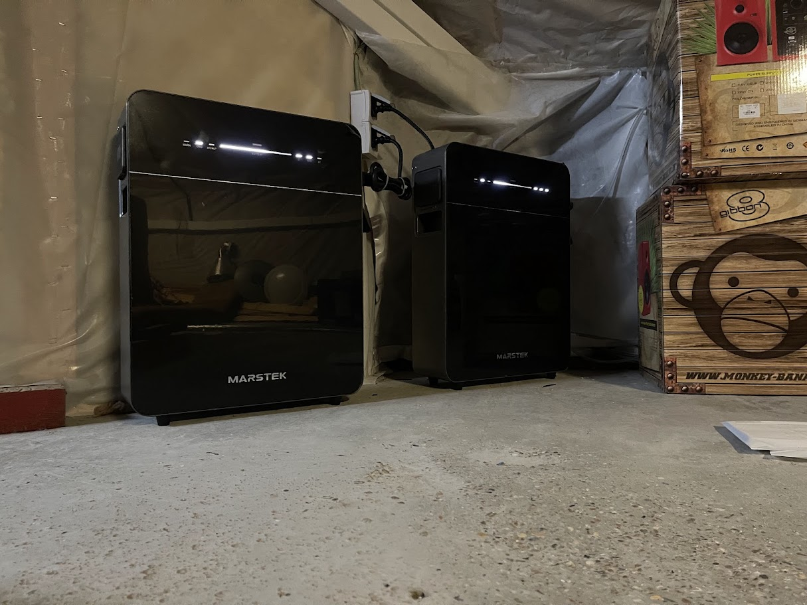

Solis + Dyness thuisbatterijHybride energiesysteem met batterijopslag.
Een thuisbatterij slaat overtollige zonne-energie op voor later. De juiste capaciteit bepalen we op basis van uw zonnepanelen, verbruik, omvormer en gewenste piekvermogens.
Een thuisbatterij slaat overtollige zonne-energie op voor later. De juiste capaciteit bepalen we op basis van uw zonnepanelen, verbruik, omvormer en gewenste piekvermogens. U hebt rechtstreeks contact met uw installateur, van advies en offerte tot de uiteindelijke plaatsing.
Een selectie van installaties die we zelf hebben uitgevoerd.

